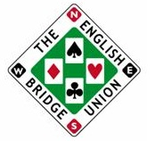
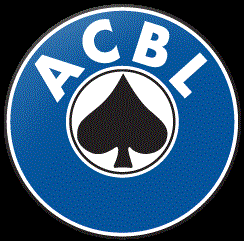
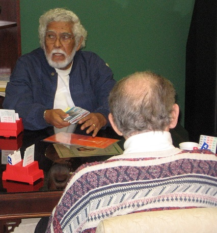
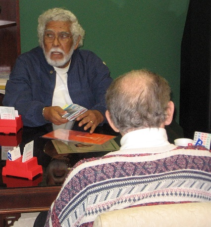

| / | Statesboro Pairs |  |
meet us every Tuesday night at 7:00 pm in the Episcopal Church on Veterans Parkway in Statesboro, Georgia.
Check our index box.
Our President is Chuck Johnson. He can be reached at 489-3921.
| Play free on-line 4 games of solitaire. No registration required. All bids explained (SAYC). |
 |  |  |
8888888888
Recent results
Statesboro Pairs Tuesday Eve Session March 3, 2020
Statesboro Pairs Tuesday Eve Session February 25, 2020
Open Pairs Tuesday Eve Session February 18, 2020
Statesboro Pairs Tuesday Eve Session February 11, 2020
|
This week's winners |
|
Statesboro Pairs Tuesday Eve Session March 10, 2020
|
Duplicate Basics
Some commonly used conventions.
Please make suggestions for improvement
Weekly sign-up sheets
Contact numbers with emails
Round ending times.
The next game is this Tuesday
starting at
7:00 on the dot. Be on time.
Please contact Chuck if you want to play.
 
